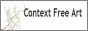

| Enthought Inc. solves challenging business and scientific
problems for customers through innovative and reliable software
applications. Enthought Inc. uses Anti-Grain Geometry as a drawing back-end in
their graphic toolkit. |
| Keep IT simple! This is the logo of REBOL.
REBOL Technologies is a privately held, venture-funded company
founded in 1997 by Carl Sassenrath. New graphic dialect in REBOL
is based on Anti-Grain Geometry. |
| PDFNet is a library used to read, write, and edit PDF
documents. Print and interactive view functionality is also included. |
| YellowBites is a software company focusing on the
 BeOS platform and was founded
in July 2000 by Ingo Weinhold and Stephan Assmus.
Stephan is the official AGG supporter for BeOS. BeOS platform and was founded
in July 2000 by Ingo Weinhold and Stephan Assmus.
Stephan is the official AGG supporter for BeOS. |
| Institute of Cartography, ETH Zurich. Hansruedi Baer is the official
suppoter of AGG for MacOS, Carbon API. |
| The main activities of OPaC bright ideas! are software and digital
hardware development. OPaC was founded in 1995 by Pierre Arnaud. |
| The Visual Component Framework. It is an advanced C++ application
framework that makes it easy to produce powerful C++ applications. The
VCF uses AGG as a part of its graphic API. |
| Founded in 1997, Runtime Revolution focuses on bringing user-centric development
to all major platforms: Macintosh, Windows, Linux, and Unix.
Runtime Revolution uses Anti-Grain Geometry for simple SVG support on all platforms. |
| RealWorld Graphics is developing an extensible graphic editor,
currently supporting 3D models, raster images, and Windows icons. AGG
is used to draw smooth shapes and apply image transformations or
special effects. |
| Nuonsoft is using AGG in their Wallpaper Cycler project to render desktop
wallpapers with calendars, notes, RSS feeds. |
 | Liberty Technology Systems, Inc. licenses CentraDoc, a library for
reading/writing PostScript and PDF (soon to include SVG and XPS).
They use Anti-Grain Geometry for the rendering component.
Liberty Technology Systems, Inc. sponsored the development
of some parts of the library. See AGG Sponsors. |
| KSVG is an implementation of the World Wide Web Consortium's
Scalable Vector Graphics recommendation. It is designed to be
a plugin for the Konqueror web browser. KSVG uses AGG as the main
rendering back end. And since KSVG is a part of KDE it means that
AGG is included in all Linux packages with new KDE. |
|  | Chris Coyne created a small language for design grammars. These grammars
are sets of non-deterministic rules to produce images. The images are
surprisingly beautiful, often from very simple grammars. The bulk of
Context Free is written in C++ and it uses AGG as the renderer for
high fidelity anti-aliased drawing that is pixel identical on all three
platforms, Windows, Macintosh, and Posix (command line).
Visit the gallery: http://chriscoyne.com/gallery/ |